In dieser Übung geht es um die Fouriersynthese und -analyse. Erzeuge mit Matlab/Octave ein
Sinusgemisch mit den folgenden Eigenschaften (f: Frequenz, A: Amplitude, phi Phasenwinkel):
f1=500Hz A1=1 phi1=0
f2=1000Hz A2=0,5 phi2=-pi/2
f3=2000Hz A3=0,25 phi3=pi
und einer Dauer von 5 s. Zeichne das Sinusgemisch mit plot im Bereich t=0-20ms. Dabei soll auf
der x-Achse die Zeit in ms abgetragen sein. Gibt die Schwingung als Wave-Datei mit wavwrite
aus, und zwar mit einer Abtastfrequenz fa von 16kHz und einer Auflösung von 16bit. Dabei
skalieren, um Clipping zu vermeiden.
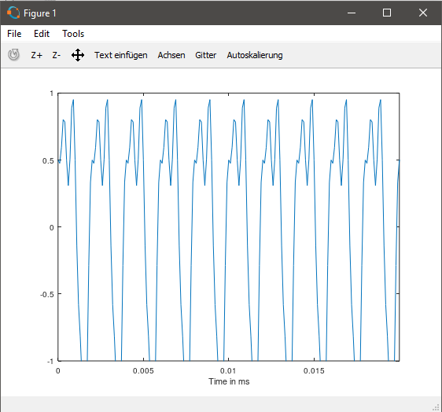
Berechne die Fouriertransformation der Sinusschwingung mit der Funktion fft und stelle das
ermittelte Amplitudenspektrum mit plot dar. Auf der x-Achse soll dabei die Frequenz in Hertz
abgetragen werden dar und zwar zunächst für den Bereich zwischen 0 und Abtastfrequenz fa.
Was fällt beim Betrachten des Spektrums auf?
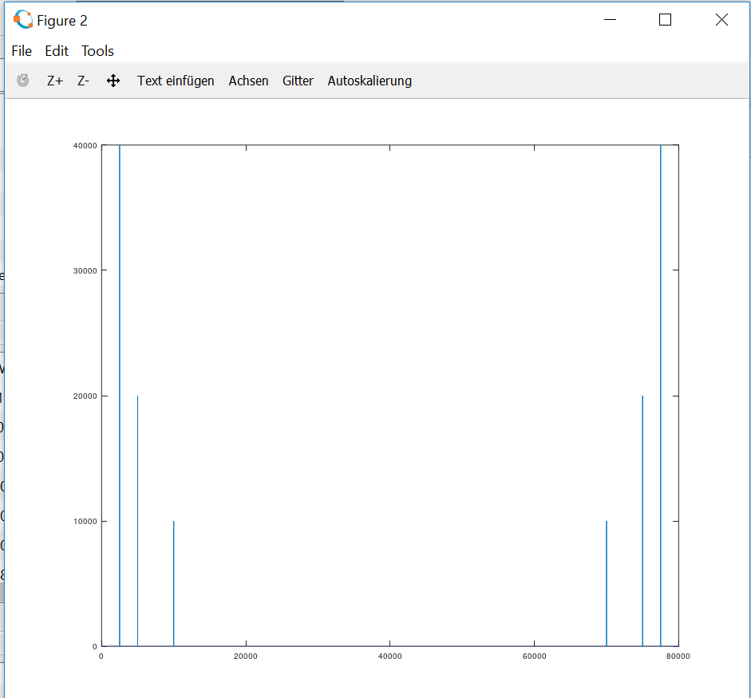
A:Beim betrachten des Spektrums fällt auf, dass die Sinussignale aus dem Sinusgemisch deutlich abgebildet werden und dass das
Amplitudenspektrum nach der Hälfte der Frequenz gespiegelt ist.
Variiere dabei die Framelänge zwischen 50ms, 100ms, 500ms, 1 s und 5 s. Welche Frequenzauflösung
delta f erhältst du für die verschiedenen Framelängen? Zoome nun in den Bereich 0 bis 4 kHz hinein.
Was fällt beim Spektrum bei der Variation der Framelänge auf? Wie kann man sich diesen Unterschied erklären?
5s
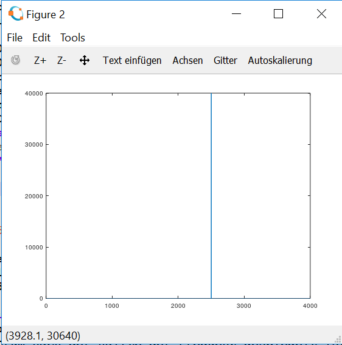
1s
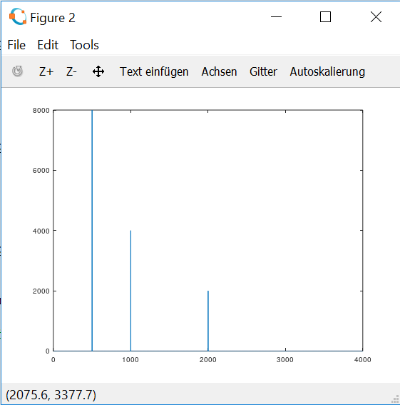
500ms
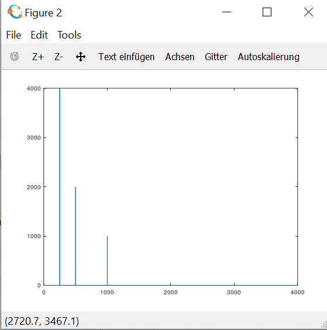
100ms
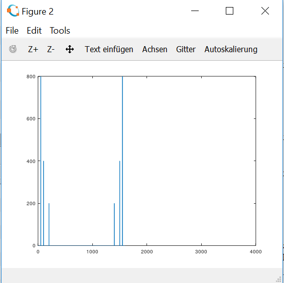
50ms
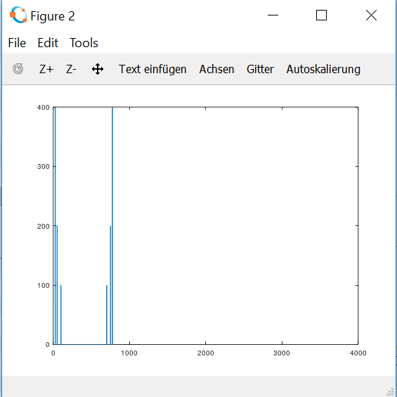
A:Durch Variation der Framelänge und gleichbleibender Abtastrate, wird die Abbildung des Sinusgemisches genauer und da die Framelänge
Einfluss auf die Zeitvariable hat, werden die Töne kleiner.
Nimm nun in Praat den Vokal ‚a‘ und den Vokal ‚i‘ mit 16kHz mono auf, und zwar für jedes Gruppenmitglied.
Achte darauf, dass am Anfang der Datei und am Ende keine Pausen bleiben,
d.h, die Datei soll gleich mit dem Sprachsignal beginnen.
A Ton Mitglied 1
I Ton Mitglied 1
A Ton Mitglied 2
I Ton Mitglied 2
Lies die Datei mit wavread in deinem Matlab-Programm ein. Berechne auch von diesem Signal die Fouriertransformation,
diesmal mit Framebreiten von 50ms, 100ms, 500ms, 1 s. Wie unterscheiden sich die Vokale in ihrem Spektrum vom Sinusgemisch
und wie unterscheiden sie sich voneinander?
Mitglied 1 A
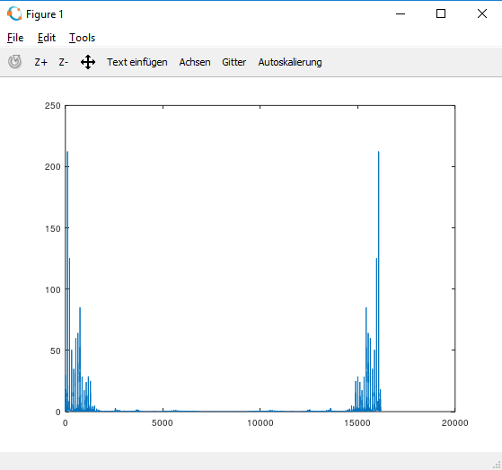
Mitglied 2 A
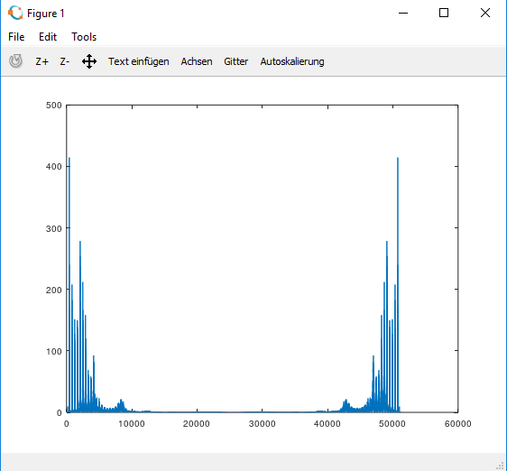
Mitglied 1 I
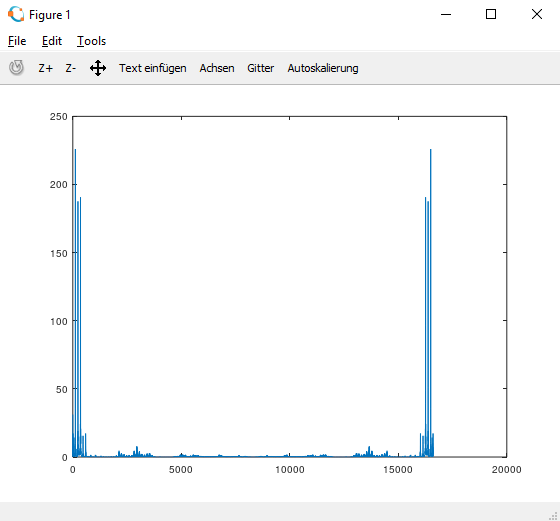
Mitglied 2 I
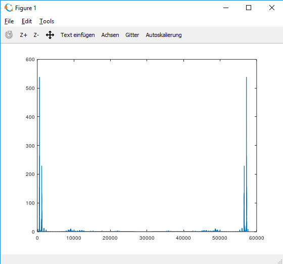
A:Die Aufnahmen von Vokal A der Mitglieder ähneln sich stark im Amplitudenspektrum, indem sie wie es aussieht aus drei Frequenzen
bestehen die auch dem Sinusgemisch ähneln. Alle aufgezeichneten Töne haben viel Störgeräusch. Die Vokale A und I unterscheiden sich
unteranderm auch darin das im I Vokal weniger störgeräusche auftreten was daraus resultiert das der Vokal I aus einem kleinern
Frequenzbereich erzeugt wird.
Mit dem Headset und PRAAT soll von jedem Gruppenmitglied ein anderes dreisilbiges Wort
aufgezeichnet werden. Das Wavesignal kann dann im Edit-Fenster angezeigt werden. Nun soll
zunächst die phonetische Transkription nach der folgenden SAMPA-Notation erfolgen:
Wort: Affentanz Mitglied 1
SAMPA-Notation: af@ntants
Wort: Achterbahn Mitglied 2
SAMPA-Notation: axt6ba:n
Wort: Affentanz
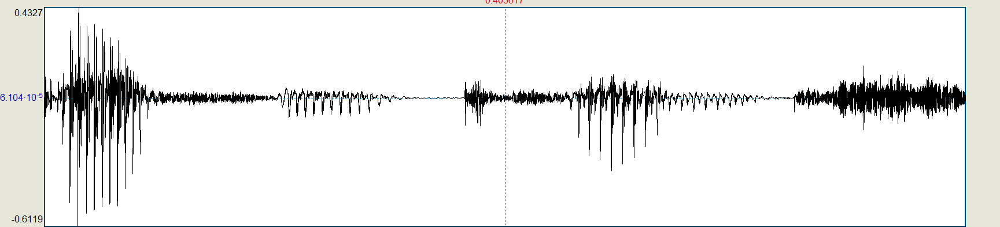
Wort:Achterbahn
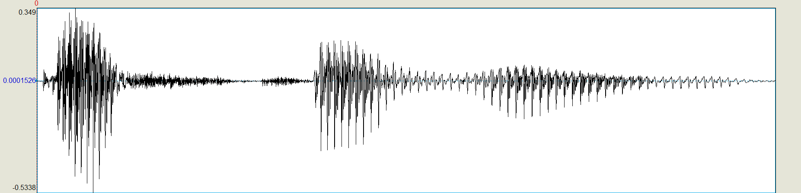
Das heißt zum Beispiel, daß das Wort "Sprachlabor" wie folgt transkribiert wird:
[SpRa:xlabo:6] (eckige Klammern sollen die Transkription kennzeichnen). Nun soll im Editor
durch Anwahl mit der Maus die Länge der einzelnen Laute im aufgezeichneten Wort bestimmt
werden. Dazu wählt man mit linkem Mausklick den Beginn des gewünschten Bereichs an und
zieht mit der Maus nach rechts, so daß sich das rosaumrandete Fenster in der gewünschten
Breite öffnet. Über dem rosa Rahmen erscheinen links und rechts Anfangs- und Endzeitpunkt
des gewählten Bereichs, in der Mitte die Länge in Sekunden. Durch Abspielen (Button über
Rahmen drücken) kann der Bereich nun wiedergegeben werden.
Darauf achten, dass in gesprochener Sprache oft Verschleifungen und Reduktionen auftreten!
Laute, die nicht gesprochen wurden, können auch nicht ausgemessen werden.
Bei der Grundfrequenz handelt es sich um die Frequenz der Stimmbandschwingungen, die
natürlich nur bei stimmhaften Lauten (stimmhafte Konsonanten und Vokale) existiert. Um sie
zu bestimmen, geht man in die Mitte eines stimmhaften Lautes und zoomt so weit hinein, daß
die Periodizität gut zu erkennen ist. Zur Orientierung kann man z.B. auffällige
Amplitudenminima im Sprachsignal wählen und den Abstand zwischen zwei solchen
charakteristischen Minima messen. Die Grundfrequenz ergibt sich dann aus dem Kehrwert
(Beispiel: gemessener Abstand 4 ms -> Grundfrequenz: 1/(0.004 s)= 250 Hz).
Tabelle für das Wort Affentanz
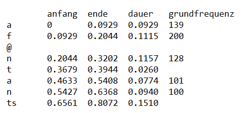
Tabelle für das Wort Achterbahn
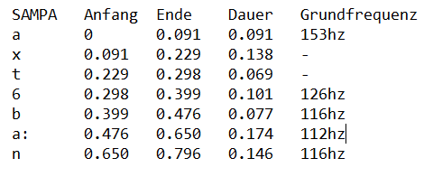
Bei der Grundfrequenz handelt es sich um die Frequenz der Stimmbandschwingungen, die
natürlich nur bei stimmhaften Lauten (stimmhafte Konsonanten und Vokale) existiert. Um sie
zu bestimmen, geht man in die Mitte eines stimmhaften Lautes und zoomt so weit hinein, daß
die Periodizität gut zu erkennen ist. Zur Orientierung kann man z.B. auffällige
Amplitudenminima im Sprachsignal wählen und den Abstand zwischen zwei solchen
charakteristischen Minima messen. Die Grundfrequenz ergibt sich dann aus dem Kehrwert
(Beispiel: gemessener Abstand 4 ms -> Grundfrequenz: 1/(0.004 s)= 250 Hz).
Wenn uns diese Angaben vorliegen, können wir sie verwenden, um dasselbe Wort mit
MBROLA synthetisieren zu lassen.
Man kann im Prinzip fast beliebig viele Stützstellen für die Grundfrequenz angeben, wir
beschränken uns aber zunächst auf einen in der Mitte des Lautes. Für stimmlose Laute
erübrigt sich die Angabe des Grundfrequenzwertes verständlicherweise.
Wort: Affentanz Mitglied 1
MBROLA synthetisiert
Wort: Achterbahn Mitglied 2
MBROLA synthetisiert
Wort: Affentanz
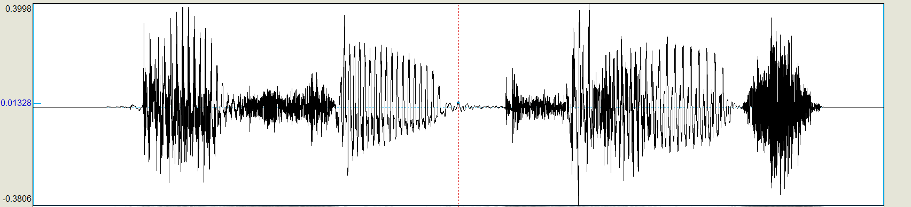
Wort:Achterbahn
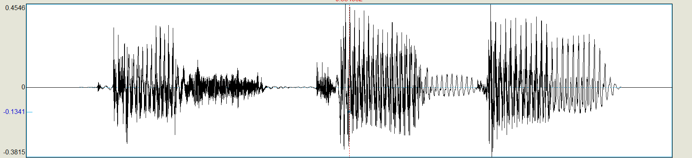
Gib das synthetische Wort wieder und vergleiche mit dem Original. Dazu kann das
synthetische in ein WAV-File exportiert werden. Sieh dir das synthetische File in PRAAT an und
kontrolliere ob die Lautlängen und die Grundfrequenz korrekt realisiert wurden. Frage: Wie
unterscheidet sich die Synthese-Wellenform vom Original? Die Grundstruktur ähnelt sich stark, aber die Amplituden sind um einiges stärker bei den meisten Vokalen in der synthese.
Frage: Wie klingt die Synthese im
Vergleich zum Original? Das Wort in der Synthese ist deutlich erkennbar, durch verbesserung des Ergebnisses mit weiteren Grundfrequenzen bekommt die Synthese einen besseren Klang und kling "Menschlicher"
. Dennoch ist sie Klar vom Original zu unterscheiden.
Frage: Wie gut werden die Dauern und die Grundfrequenzkontur des
Originals nachgebildet? Die Dauer der einzelnen Vokale werden sehr gut abgebildet, unteranderem auch die Grundfrequenzen
Verbessere das Ergebnis, in dem du je Laut drei Grundfrequenz-Werte mißt (am Anfang, in
der Mitte und am Ende). Als nächstes sprich einen kurzen Satz und verfahre genau wie beim
Einzelwort. Hier reicht ein Grundfrequenzwert pro Laut. Frage: Vergleiche die Sprachqualität von
Einzelwort und Satz? Mann erkennt sofort, dass bei dem Satz nur eine Grundfrequenz verwendet wurde, nicht wie bei dem einzel Wort und dadurch erscheint der Satz viel
unnatürlicher und klingt wie von einem Computer gesprochen. Die einzelnen Vokale im Satz scheinen auch verschwommener und unklarer.